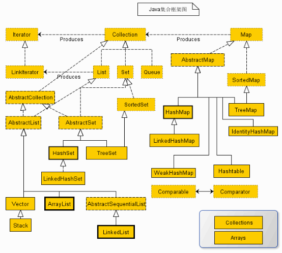
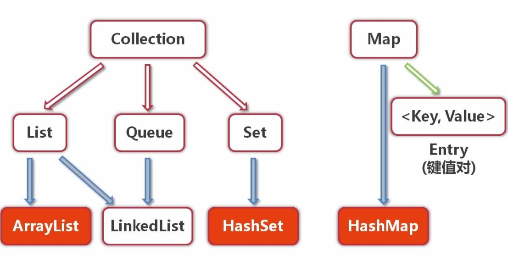

今天开始要聊聊Java里的一个大家伙，那就是容器。
所谓容器，就是专门用来装对象的东西，如果你学过高数，没错，就跟里面说的集合是一个概念，就是一堆对象的集合体，但是集合类是容器类中的一个子集，为了区别表示，所以还是叫容器类，之后所说的集合类只是容器里的一个子集，之后会有详细介绍。
容器就是用来存放和管理其他类对象的地方，你可以把它理解为仓库管家，当你有东西需要存放和管理的时候，就要记得来找它。你也许会说，不是有数组吗？确实，用数组存放一堆相同类型对象也是一个不错的选择，但是有一个很大的缺陷，那就是数组大小只能是固定的，不能从数组里动态添加和删除一个对象，要扩容的时候，就只能新建一个数组然后把原来的对象全部复制到新的数组里，而且只能存放相同类型的对象，使用起来不够灵活。然而我们的管家就不一样了。
国际惯例，先来看一个栗子：
public class Test {
public static void main(String args[]){
//小明打算学Java，买了三本书
Book bookA = new Book("Java核心技术（卷一）", 88.9);
Book bookB = new Book("Java核心技术（卷二）", 88.6);
Book bookC = new Book("Java编程思想", 99.0);
//他想了想，放哪呢？到处放怕之后会找不到，放书架以后书变多了找起来就很麻烦
//于是他找了个管家
Map<String, Book> bookMap = new HashMap<>(3);
//然后跟管家说，这三本书先放你这了，要用的时候找你拿
bookMap.put(bookA.getName(), bookA);
bookMap.put(bookB.getName(), bookB);
bookMap.put(bookC.getName(), bookC);
//勤劳的管家兢兢业业的保存好了三本书
//小明回到家，想检查一下管家老不老实
//“管家，把Java核心技术（卷一）给我拿过来”
Book bookD = bookMap.get("Java核心技术（卷一）");
//他查看了一下这本书的信息并跟原来的信息校验了一番
System.out.println(bookD);
System.out.println(bookA.equals(bookD));
//并同样校验了另外两本书
Book bookE = bookMap.get("Java核心技术（卷二）");
System.out.println(bookE);
System.out.println(bookB.equals(bookE));
Book bookF = bookMap.get("Java编程思想");
System.out.println(bookF);
System.out.println(bookC.equals(bookF));
//嗯，看来管家没有玩花样，还是原来的书，晚饭给他加个蛋
}
}
class Book{
private String name;
private Double price;
public Book(String name, Double price) {
this.name = name;
this.price = price;
}
public Double getPrice() {
return price;
}
public void setPrice(Double price) {
this.price = price;
}
public String getName() {
return name;
}
public void setName(String name) {
this.name = name;
}
@Override
public String toString() {
return "Book{" +
"name='" + name + '\'' +
", price=" + price +
'}';
}
}
输出如下：
Book{name='Java核心技术（卷一）', price=88.9}
true
Book{name='Java核心技术（卷二）', price=88.6}
true
Book{name='Java编程思想', price=99.0}
true
相信大家看过小明和管家的故事之后，对容器这个概念应该有初步的了解了。容器一般来说就是在你需要存放一系列对象时，可以给你管理对象的好管家。
当然，容器家族里并不只有HashMap这一个管家，最开始就说了，容器可是一个庞大的家族。先来看一张图感受一下吧：

好像有点多？关系有点复杂。没错，除了并发包里的集合类以外的大部分容器类差不多都在这了，这个图，emmmm…看看就好，我们还是看下面这个图吧

别慌，其实最常用的就是这么几个了，Collection和Map是两个大的接口，Collection下有三个子接口，List，Queue，Set，下面是最常用的三个类，ArrayList，LinkedList，HashSet。Map接口下最常用的就要数上面栗子里的HashMap了。正如你看到的那样，容器类里有很多不同的实现类，也就是不同的管家，他们有的不同的能力，各有所长也各有所短，至于他们的具体介绍，将会留到之后的几篇文章里介绍，本篇作为集合的介绍篇就不多做讲解了。
需要注意的是，容器中只能存放对象，而不能存放基本类型。所以当你将一个 int 型数据 1放入容器中的时候，其实它会自动装箱转换成 Integer 类后存入的，Java中每一种基本类型都有对应的引用类型。在容器存放的是多个对象的引用，对象本身还是放在堆内存中。容器可以存放不同类型，不限数量的数据类型。
Collection接口
Collection接口是容器家族里的老大哥，是最基本的容器接口，但是这里的Collection跟容器并不是等价关系，因为你仔细看看上面的图就知道，容器家族里还有另外一个老大哥，那就是Map接口。一个Collection代表一组Object，即Collection的元素（Elements）。Collection接口下有三个子接口，分别是List，Set，Queue，它们各有各的特点，下面会一一介绍，但是都继承于Collection接口，所以继承了Collection的所有特性。
我们可以来看看Collection接口都有哪些方法：
public interface Collection<E> extends Iterable<E> {
//查询操作
/**
* 返回集合中元素个数
*/
int size();
/**
* 集合是否为空
*/
boolean isEmpty();
/**
* 是否包含某个元素
*/
boolean contains(Object o);
/**
* 取迭代器
*/
@Override
Iterator<E> iterator();
/**
* 转到数组
*/
Object[] toArray();
/**
* 转到指定数组
*/
<T> T[] toArray(T[] a);
// 修改操作
/**
* 添加元素
*/
boolean add(E e);
/**
* 移除元素
*/
boolean remove(Object o);
// 批量操作
/**
* 是否全部包含
*/
boolean containsAll(Collection<?> c);
/**
* 全部添加
*/
boolean addAll(Collection<? extends E> c);
/**
* 全部移除
*/
boolean removeAll(Collection<?> c);
/**
* 条件移除
*/
default boolean removeIf(Predicate<? super E> filter) {
Objects.requireNonNull(filter);
boolean removed = false;
final Iterator<E> each = iterator();
while (each.hasNext()) {
if (filter.test(each.next())) {
each.remove();
removed = true;
}
}
return removed;
}
/**
* 保留全部
*/
boolean retainAll(Collection<?> c);
/**
* 清空
*/
void clear();
// 比较和哈希
/**
* 比较是否相等
*/
boolean equals(Object o);
/**
* 取哈希值
*/
int hashCode();
@Override
default Spliterator<E> spliterator() {
return Spliterators.spliterator(this, 0);
}
//流操作
default Stream<E> stream() {
return StreamSupport.stream(spliterator(), false);
}
default Stream<E> parallelStream() {
return StreamSupport.stream(spliterator(), true);
}
}
可以看出，Collection的操作还是蛮多的，增删该查和批量操作都有，至于迭代器是什么东西，后面的篇章会有详细介绍。最后两个方法涉及到了流操作，这是Java8里新添加的特性，关于流操作的知识，这里暂时不多说，以后在做讲解。
通过本篇，你只需要了解一下集合是什么，为什么要有集合，集合家族的全貌，了解一下Collection接口中有哪些方法就足够了，之后的文章会从以下几方面来介绍容器家族：
1.Map接口
2.Iterable接口
3.List，Set，Queue接口
4.ArrayList使用方式和应用场景+源码剖析
5.HashSet使用方式和应用场景+源码剖析
6.LinkedList使用方式和应用场景+源码剖析
7.HashMap使用方式和应用场景+源码剖析
今天的讲解就到此为止了，仅仅介绍了容器的基本概念，作为容器学习的开胃菜，后面一系列的文章都会围绕容器展开，希望大家继续关注！